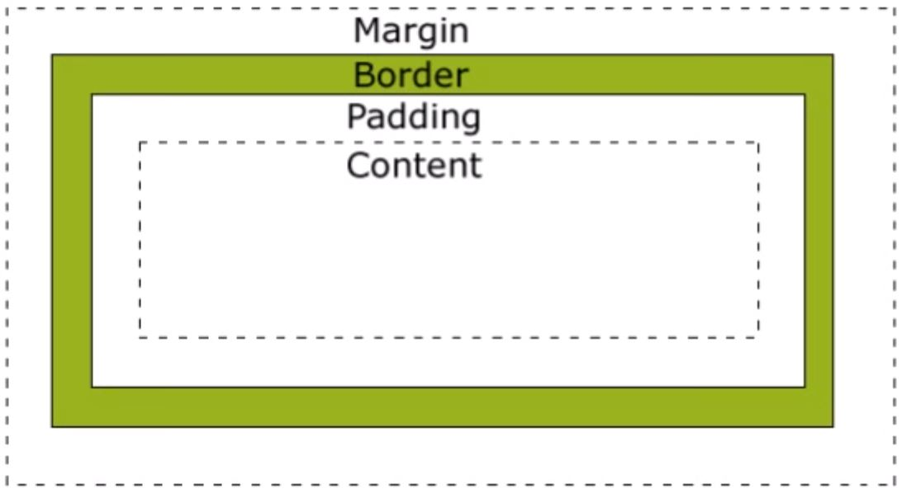

Box-Modell
- HTML Elemente sind eine Art Boxen (display: BLOCK;)
- Bestehend aus: margin, border, padding, content
- Folgende Abbildung visualisiert dies:

Beispiel 1 - Content-Box
Block-Element mit folgenden Parametern:
- Breite: 250px
- Padding: 40px (rechts und links)
- Border: 10px (rechts und links)
Inhalt
Beispiel 2 - Border-Box
Block-Element mit den Selben Parametern
Inhalt
Warum Border-Box sinnvoll ist